Analysis
Here each analysis script is described in a short summary and by its doc string.
CIRRUS-HL
CIRRUS-HL laboratory calibration comparison
Script: cirrus_hl_smart_compare_lab_calibs.py
CIRRUS-HL: Compare laboratory calibrations of SMART
For CIRRUS-HL two laboratory calibrations were done. Here the two calibrations are compared to each other.
The first lab calibration did not have the final optical fiber and inlet setting as were used during CIRRUS-HL. Thus, a difference between the after and before campaign calibration is to be expected. In addition to that, the optical fibers were unplugged after the campaign for the transport of SMART to Leipzig.
Each lab calibration is processed with smart_process_lab_calib.py to correct the files for the dark current.
After that the calibration factors are calculated with analysis.smart_calib_lab_ASP06.py for ASP06 and analysis.smart_calib_lab_ASP07.py for ASP07.
compare calibration factors
compare Ulli measurements
Results
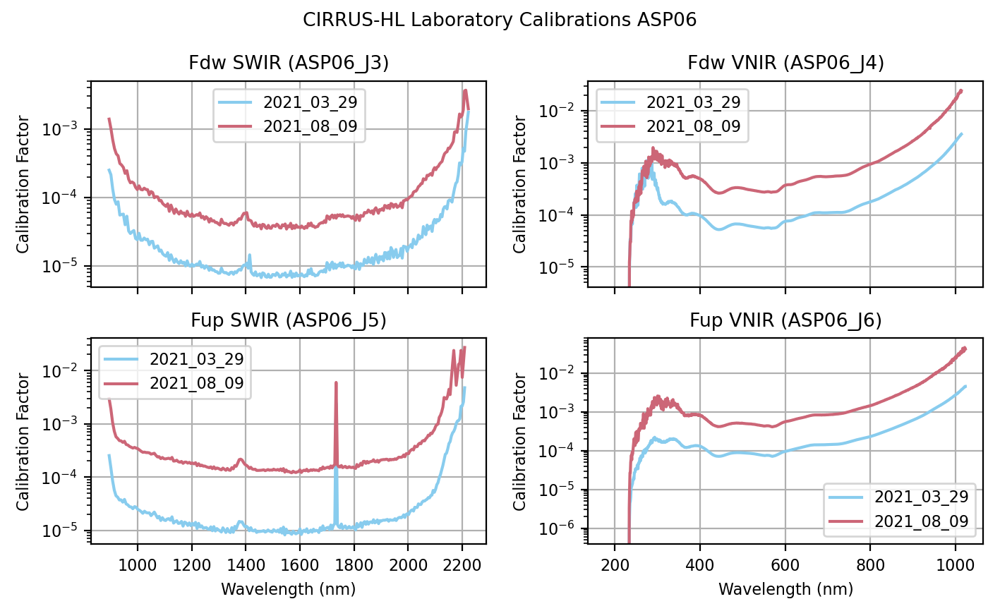
Comparison of the lab calibration factors before and after CIRRUS-HL for the four channels on ASP06.
Comparing the calibration factors of ASP06 between the before and after calibration shows that the after calibration (red) has a higher magnitude. This is due to fewer counts being measured during the after calibration. A possible cause of this is that the cable used in the after calibration was longer and also showed signs of damage leading to a loss of photons on the way from the inlet to the spectrometer. To account for that a higher calibration factor is needed to calculate the given irradiance which did not change between the calibrations. The same result can be observed for the calibrations for ASP07.
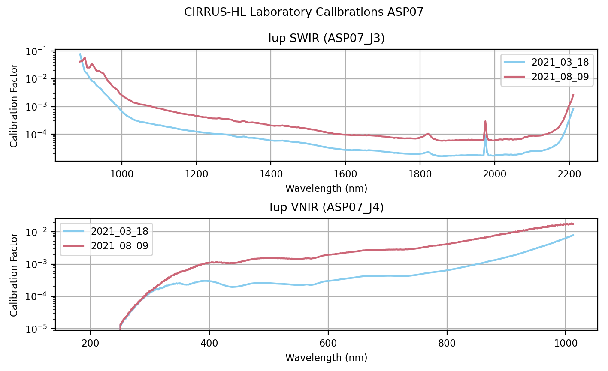
Comparison of the lab calibration factors before and after CIRRUS-HL for the two channels on ASP07.
Ulli measurements
Taking a look at ASP06’s measurements of the Ulbricht sphere (Ulli) shows the same difference in magnitude between the calibrations when comparing the dark current corrected counts.
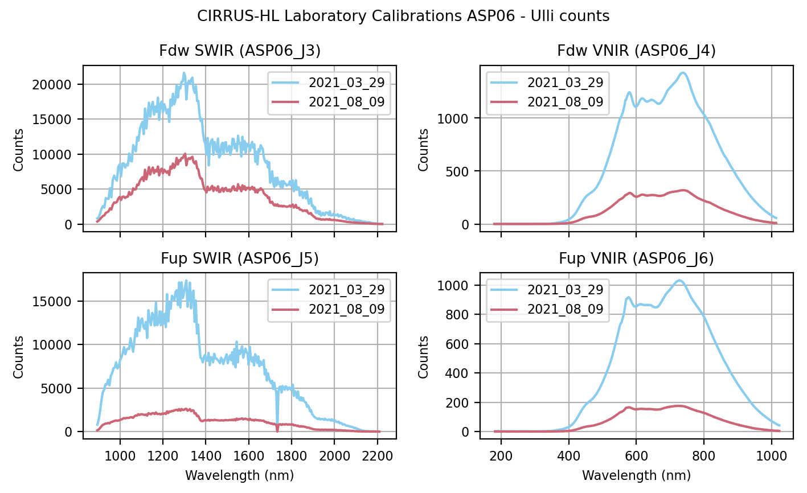
Dark current corrected count measurements of the Ulli transfer sphere from ASP06.
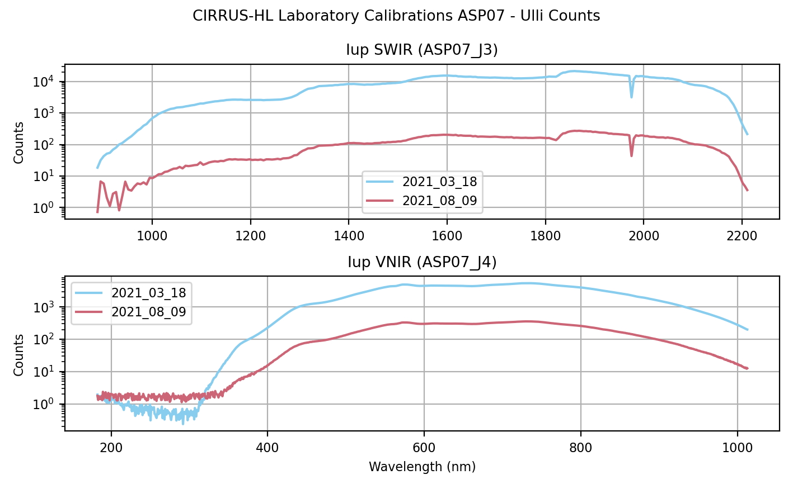
Dark current corrected count measurements of the Ulli transfer sphere from ASP07.
It can clearly be seen that during the after calibration less photons reached the spectrometers. However, this should still result in the same irradiance as long as the Ulli sphere is run with the same power source and the same settings. Just like the output of the 1000W calibration lamp should not change between the calibration, so should the output of the Ulli sphere not change. Nonetheless, when looking at the calculated irradiance using the corresponding laboratory calibration factors clear differences can be observed for the downward measurements.
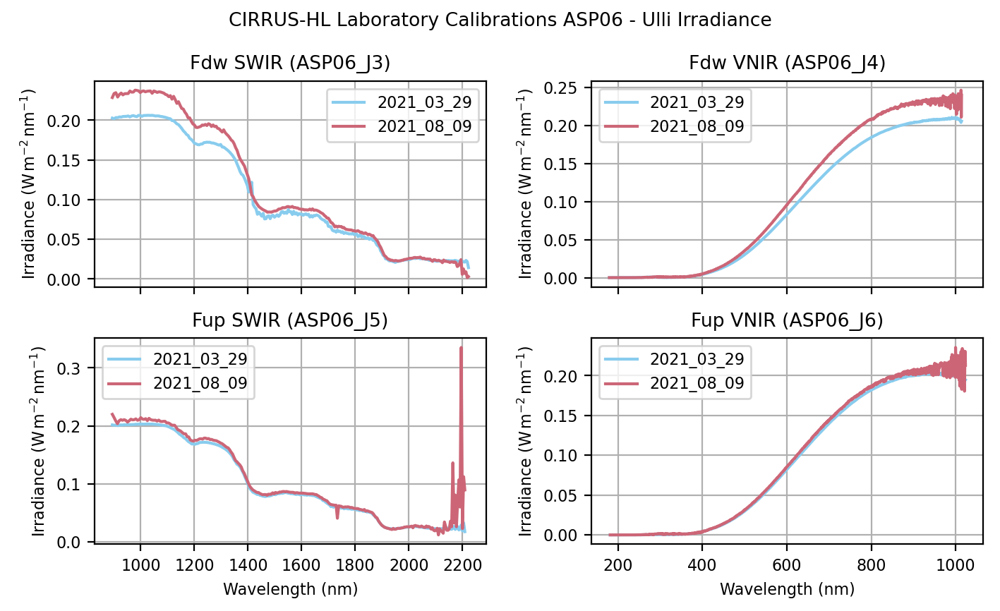
Calculated irradiance of the Ulli transfer sphere from ASP06.
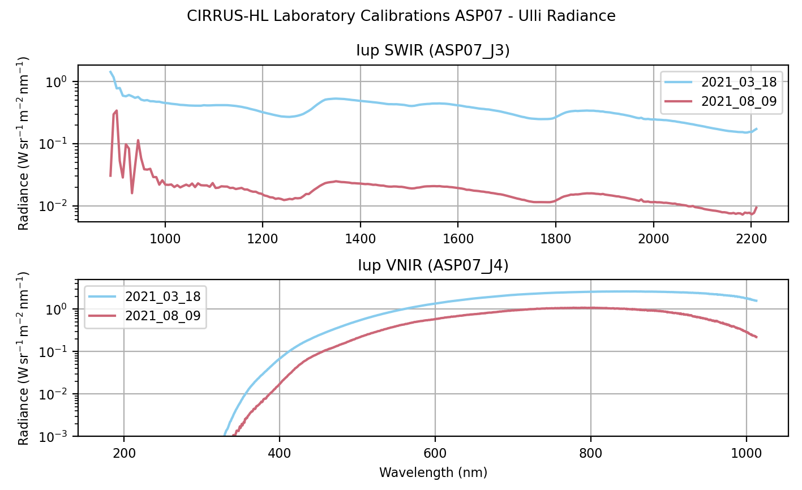
Calculated radiance of the Ulli transfer sphere from ASP07.
Plotting the actual difference between the two shows a more detailed picture.
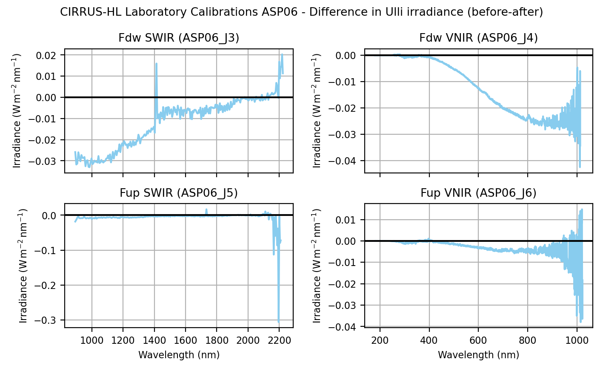
Difference between measured irradiances from Ulli sphere (before - after).
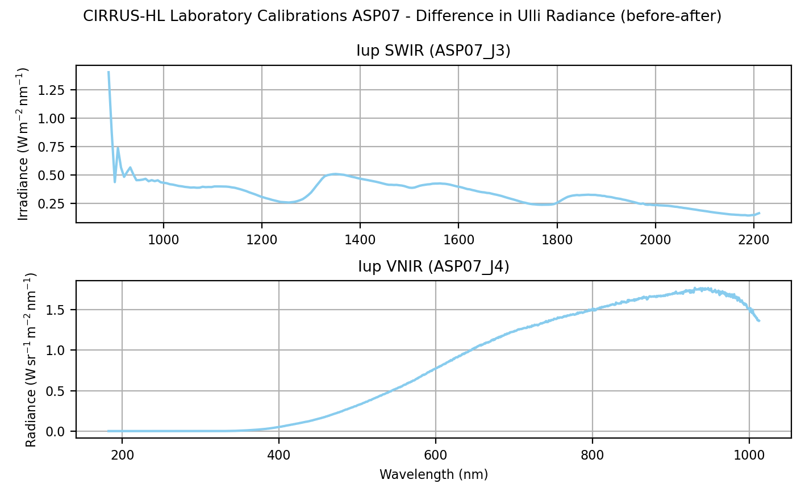
Difference between measured radiances from Ulli sphere (before - after).
author: Johannes Röttenbacher
cirrus_hl_campaign_analysis.py
Analysis script for statistics about the whole campaign
author: Johannes Röttenbacher
cirrus_hl_case_study_20210625a.py
Case study for Cirrus-HL * 25.06.2021: Radiation Square for BACARDI author: Johannes Röttenbacher
cirrus_hl_case_study_20210629a.py
Case study for Cirrus-HL - 29. June 2021
Cirrus over Atlantic west and north of Iceland
-> Poster HALO Status Colloquium 2021 -> Presentation for CIRRUS-HL workshop 2. - 3.12.2021 -> 1. PhD Talk -> Presentation for CIRRUS-HL workshop 30. - 31.05.2022
author: Johannes Röttenbacher
cirrus_hl_case_study_20210712a.py
Case study for Cirrus-HL * 12.07.2021: First day with SMART fixed author: Johannes Röttenbacher
cirrus_hl_case_study_20210715a.py
Case study for Cirrus-HL * 15.07.2021 SMART fixed - contrail outbreak over Spain - Radiation Square author: Johannes Röttenbacher
cirrus_hl_overview.py
Prepare overview plots for each flight author: Johannes Röttenbacher
HALO-(AC)³
HALO-(AC)³ Laboratory Calibration comparison
Script: halo_ac3_smart_compare_lab_calibs.py
HALO-(AC)³: Compare laboratory calibrations of SMART
For HALO-(AC)³ two laboratory calibrations were done. Here the two calibrations are compared to each other.
Important: It was decided to use the other spectrometer pair (J5, J6) because the dark current looks better and does not have as many high offsets on some pixels. Also see the note on the effective receiving area! Due to technical difficulties the spectrometer pair J3, J4 was used during HALO-AC3. This calibration was therefore used for the transfer calibration. However, a different inlet was used (VN05). The first calib was done with inlet VN11.
Note on effective receiving area: Effective receiving area is in front of inlet not inside it, but was interpreted otherwise. Thus, the distance between the effective receiving area and the lamp is off by 44mm!
The second lab calibration after the campaign was done with the correct inlet and the correct channels: VN05 and J3, J4
Each lab calibration is processed with smart_process_lab_calib_halo_ac3.py to correct the files for the dark current.
After that the calibration factors are calculated with analysis.smart_calib_lab_ASP06_halo_ac3.py for ASP06.
compare calibration factors
compare Ulli measurements
Results HALO-(AC)³
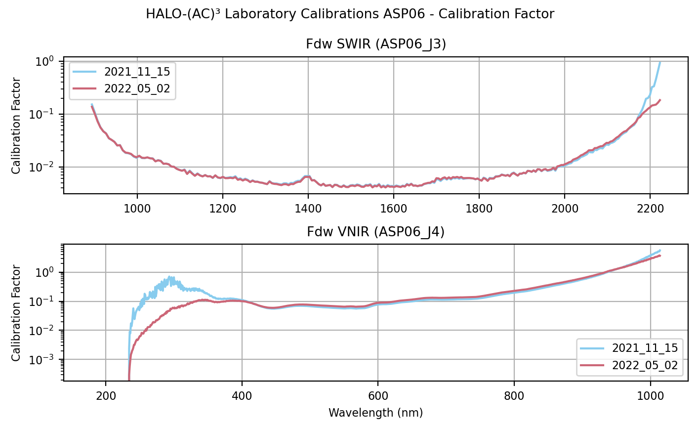
Comparison of the lab calibration factors before and after HALO-(AC)³ for the two channels on ASP06.
Comparing the calibration factors of ASP06 between the before and after calibration shows that the after calibration (red) has a lower magnitude in the wavelength range from 250 to 350 nm for the VNIR channel. This means less signal in the before calibration for those pixels.
Ulli measurements
Taking a look at ASP06’s measurements of the Ulbricht sphere (Ulli2) shows only a minor difference in magnitude between the calibrations when comparing the dark current corrected and normalized counts. Especially in the VNIR part between 180 and 350nm a lot of noise can be seen, which might already explain the difference in calibration factors for those wavelengths.
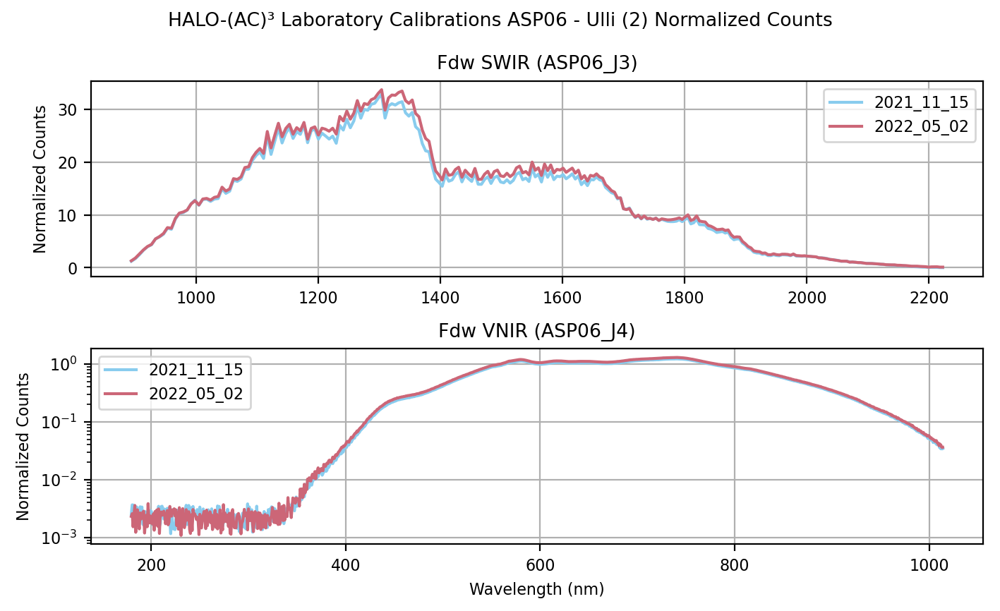
Dark current corrected, normalized count measurements of the Ulli transfer sphere (Ulli2) from ASP06.
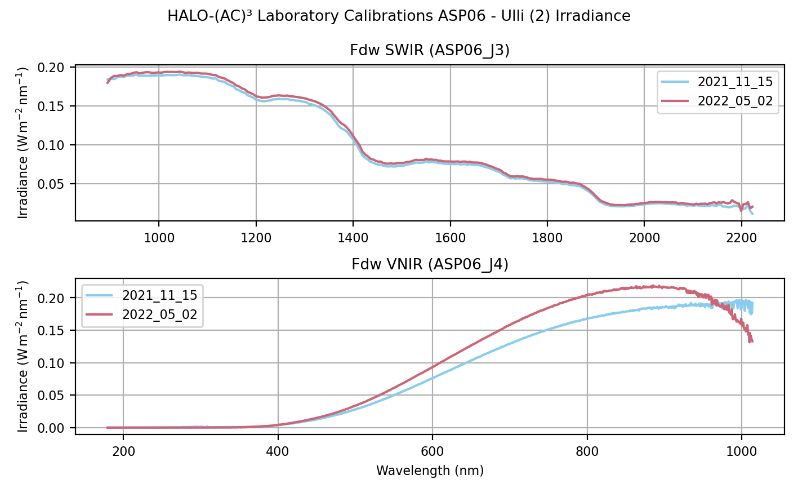
Calculated irradiance of the Ulli transfer sphere (Ulli2) from ASP06 measurements.
Plotting the actual difference between the two shows a more detailed picture.
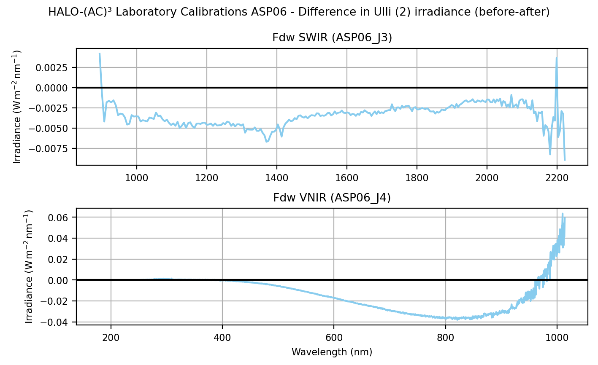
Difference between measured irradiances from Ulli sphere (Ulli2) (before - after).
The after campaign calibration shows a higher irradiance with increasing wavelength in the VNIR channel (J4).
There were several problems with the before calibration on 15. November 2021:
wrong inlet used (VN11 instead of VN05)
the effective receiving area was wrongly interpreted leading to an offset of 44mm in the distance between the calibration lamp and the inlet (should be 50cm)
the power supply for Ulli3 had a voltage limit in place instead of a current limit -> only relevant for the transfer calibration at Oberpfaffenhofen before the campaign
Thus, it is decided to use the after campaign calibration for all transfer calibrations.
author: Johannes Röttenbacher
SMART
smart_cosine_calibration.py
Cosine Response Calibration of irradiance inlets of SMART for CIRRUS-HL and HALO-(AC)3
Deprecated since version 16.11.2021: The measurements were done with the inlets switched and not all measurements were performed so it was decided to repeat the whole calibration (see smart_cosine_calibration_v2.py). This script is kept for archiving only.
ASP06 J3, J4 (Fdw) with inlet ASP02 done on 5th November 2021 by Anna Luebke and Johannes Röttenbacher
ASP06 J6, J6 (Fup) with inlet ASP01 done on 8th November 2021 by Anna Luebke and Johannes Röttenbacher
Lamp used: FEL-1587
The inlet was rotated at 5° increments in both directions away from the lamp. Clockwise is positive. Each measurement lasted about 30 seconds with 1000 ms integration time. Data is stored in folders which denote the angle the inlet was turned to.
angle_turned: The inlet was turned 90deg around the horizontal axis to evaluate all four azimuth directionsangle_diffuse: A baffle was placed before the inlet to shade it (dark measurements)
author: Johannes Röttenbacher
smart_cosine_calibration_v2.py
Cosine Response Calibration of irradiance inlets of SMART for CIRRUS-HL and HALO-(AC)3 2nd try
ASP06 J3, J4 (Fdw) with inlet VN05 (ASP_01) done on 16th November 2021 by Anna Luebke and Johannes Röttenbacher and finished on 22th November by Benjamin Kirbus and Johannes
ASP06 J5, J6 (Fup) with inlet VN11 (ASP_02) done on 22th November 2021 by Benjamin Kirbus and Johannes Röttenbacher
Lamp used: cheap 1000W lamp optical fiber: 22b -> 21b has very little output from the SWIR fiber, thus the 22b fiber was chosen for both inlets as it is identical to 21b
The inlet was rotated at 5° increments in both directions away from the lamp. Clockwise is positive. Each measurement lasted about 42 seconds with 700 ms integration time for VN05 and about 48s with 800ms integration time for VN11. Data is stored in folders which denote the angle the inlet was turned to.
angle_turned: The inlet was turned 90deg clockwise around the horizontal axis to evaluate all four azimuth directionsangle_diffuse: A baffle was placed before the inlet to shade it (dark measurements)
author: Johannes Röttenbacher
smart_effective_receiving_area.py
Calculate the effective receiving area of an irradiance inlet according to the R^2 law
author: Johannes Röttenbacher